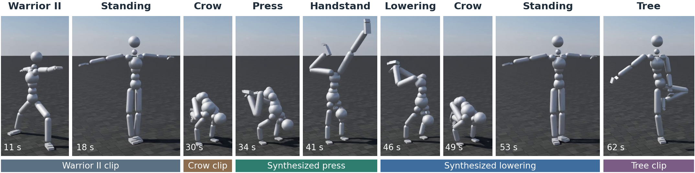
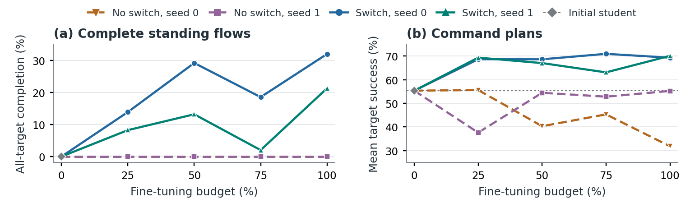
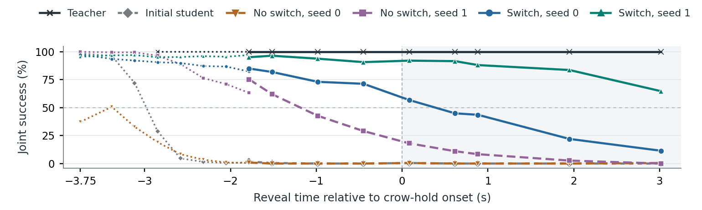
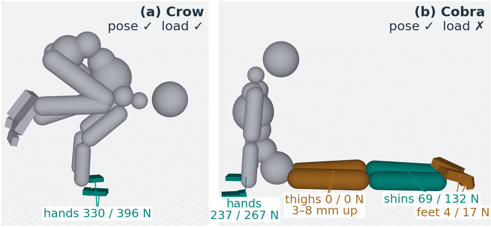
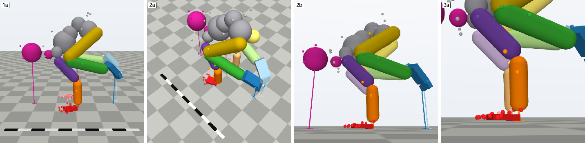
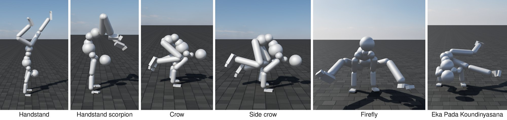
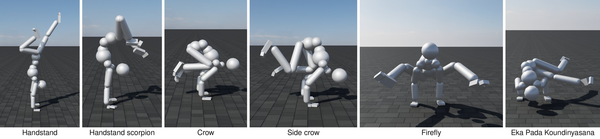

San Francisco
Workshop submission · CoRL 2026 Workshop on Open Problems in Contact-Rich Loco-Manipulation
Contact-rich loco-manipulation requires a whole-body controller to change which limbs carry its weight as a task unfolds, often after the next movement has been revised. A controller that performs two skills individually may still fail when the second is requested during the first. We study this gap in a simulated yoga repertoire of arm balances, inversions, and single-leg supports, distilled online from a privileged teacher into a student that accepts partial pose-and-contact goals. During distillation, we replace a clip's continuation with a compatible alternative at randomized times, preserving physical state and history, while the teacher, student architecture, and objective stay fixed. Across two fine-tuning seeds per condition, completion of all designated targets in multi-hop chains reaches 65% and 79%, versus below 1% and 18% without switches, and sequences through standing pairings excluded from switch training reach 32% and 21%, versus zero for both controls, while familiar-route success stays near 66%. A reveal-time sweep separates two remaining failures: returning to the original continuation and arriving after the deadline. Requested-support failures persist after switching: pose-only success exceeds pose-and-load success by 14–16 percentage points in the switched students and by 19.5 in the teacher.
6:20, silent, 1080p. Side by side: the teacher (left) and the student (right) on the same commands; green, drawn beside each, is what it is asked to do. Rates in the captions are over replicas, repeated rollouts of the same plan. Chapters:
The student is distilled online from a frozen teacher that labels every state the student visits. Trained clip by clip, an arrival at a hold is always followed by the same continuation. Switch collection replaces the rest of a clip with a compatible continuation from another clip, at standing, at holds that clips share such as crow and handstand, at the ends of synthesized transitions, or between two recordings of one pose, while the physical state and history carry on. The goals, the teacher's labels, and the tracked reference all follow the new clip. Two switch and two no-switch fine-tuning runs start from the same student and share everything else.

Switch collection raises all-target completion of the standing flows from zero to 32% and 21%, while both no-switch controls stay at zero throughout fine-tuning. Multi-hop chains reach 65% and 79% against below 1% and 18%, and familiar-route success stays near its initial 66%. Standing is the most frequent switch site in training, and every clip in a held-out pairing appears in the same role in trained pairings, so this is transfer to new pairings at a familiar hub rather than to a new kind of junction.
| Teacher | Initial student | No switch, seed 0 | No switch, seed 1 | Switch, seed 0 | Switch, seed 1 | |
|---|---|---|---|---|---|---|
| Standing flows: all targets | .574 | .000 | .000 | .000 | .320 | .213 |
| Standing flows: second-clip target | .755 | .011 | .000 | .001 | .558 | .409 |
| Multi-hop chains: all targets | .800 | .118 | .007 | .184 | .649 | .786 |
| Five revised destinations | 1.000 | .431 | .285 | .671 | .784 | .944 |
| Familiar-route target success | .777 | .663 | .567 | .690 | .666 | .665 |
| Familiar-route pose-only success | .972 | .820 | .681 | .865 | .810 | .823 |
| Familiar-route passing plans | 32/41 | 27/41 | 25/41 | 28/41 | 29/41 | 28/41 |
Composition and familiar-route performance at the same fine-tuning budget. Rates use the pose-and-load rule except the pose-only row; “all targets” requires every designated hold to pass in one rollout. The teacher is a capability reference with different conditioning and replica counts.

Returning to crow, we vary when the jump to plank is revealed while the crow hold and the 0.30 s plank window stay fixed; success requires both. Both switch-trained runs outperform both controls at every reveal time, and the teacher succeeds at every one from its own arrivals. At the latest reveal, success is 11% and 65% against 0–0.4% for the controls. The two seeds fail differently: one increasingly returns to the crow clip's own continuation and stands up, while the other follows the request but can arrive late, so that 79 of its 80 failures eventually reach plank, 77 of them only after the window closes.

On familiar routes, the switch-trained students pass on pose alone 14–16 percentage points more often than on pose and load, close to the initial student; switching does not remove these failures. The teacher shows the same distinction, 97% by pose alone against 78% with loading conditions, and all 248 replicas in its gap miss a requested load. The unloaded supports sit within 2 cm of the floor, so a touch test would pass them: in Cobra, the teacher's pose error is 3 cm while its requested thighs hover 3–8 mm above the floor and carry no load. The teacher's reward penalizes unwanted loading but never rewards requested support, and its students show the same failures.

Fifty-six motion-capture clips of one performer cover 37 yoga pose families: arm balances, inversions, and single-leg balances whose supports shift among feet, hands, forearms, head, and trunk. The simulated body is rebuilt from the performer's skeleton, the references are repaired against the capture's contact measurements, and a sampling-based optimizer synthesizes five transitions that no clip contains, among crow, handstand, plank, and chaturanga. An offline vision-language reviewer checks contact labels from renders like the one below. A PPO teacher reads two timed full-body goals; a student distilled from it reads five partial pose-and-contact goal slots and passes the goal to its action decoder only through a discrete intent code.



@misc{kumar2026goal,
title = {Goal Revisions and Support Failures in Contact-Rich
Whole-Body Skill Composition},
author = {Kumar, Visak},
year = {2026},
howpublished = {CoRL 2026 Workshop on Open Problems in Contact-Rich
Loco-Manipulation (submission)},
url = {https://visakk.github.io/pose-is-not-support/}
}